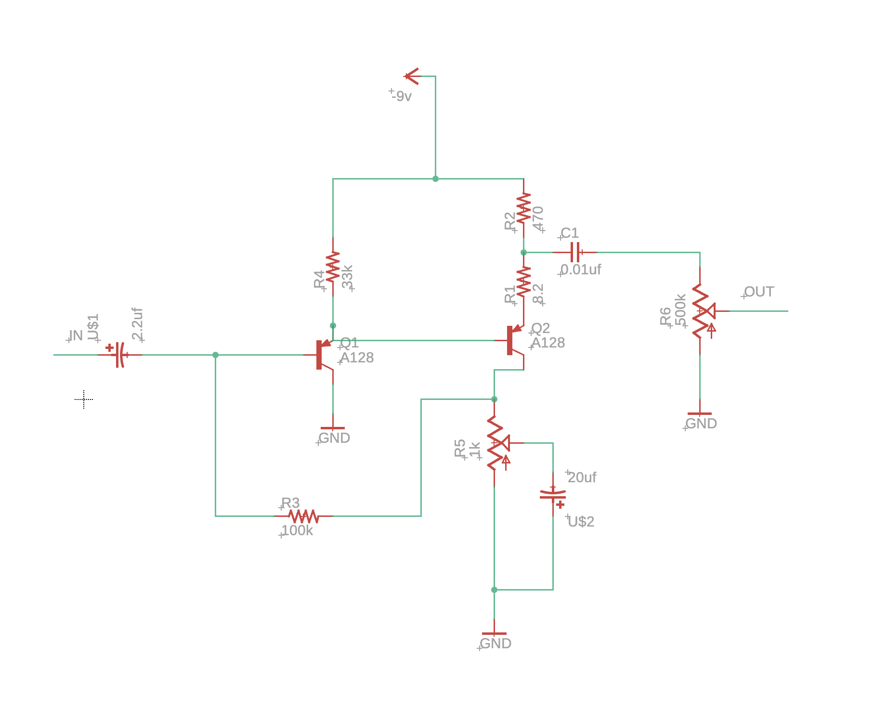

CNC Milling and Molding
This week I designed and CNC milled a PCB for my Guitar pedal.
The Circuit
The circuit that I designed the PCB for is a fuzz face circuit. This distorts a audio signal and makes it fuzzy.
I designed this circuit basses on an online diagram of the original fuzz face pedal circuit. I used eagle for the design and PCB layout.